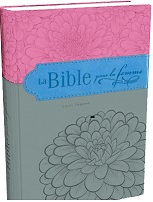

Les bibles
Bible pour la femme
Cette Bible présente de nombreuses ressources spécialement développées par des femmes pour les femmes, et qui la rendent unique et très attractive. Cette Bible a été spécialement conçue pour la femme d'aujourd'hui et possède les caractéristiques suivantes : - Texte biblique (Louis Segond). - 30 planches relatives aux femmes de la Bible magnifiquement illustrées et insérées tout au long de l'Ecriture : Bath-Schéba, Débora, Agar, Marthe, Marie, etc., accompagnées d'une réflexion intéressante sur les enseignements que nous offrent leurs vies. - Plus de cent commentaires du plus grand intérêt pour les femmes (Une femme pouvait-elle être un prophète dans la Bible ? La femme est-elle un personnage négatif dans la Bible ? Le lévirat, etc.) insérés au sein de la Bible et écrits par des auteures reconnues. - Introductions spéciales présentées par sections (le pentateuque, la littérature de la Sagesse, les Évangiles, etc.), expliquant le rôle joué par les femmes dans la Bible et comment elles remplirent leur mission. - Une structure de chaque livre de la Bible. - Plus de 60 articles consacrés à vertus et aux femmes qui les incarnent les mieux. - Les articles généraux sur les femmes connues et moins connues de la Bible qui soulignent les leçons concrètes que nous pouvons tirer de leurs vies.
Bible du pasteur
Un outil nécessaire pour remplir les fonctions d'un vrai ministre de Dieu. Elle contient différentes ressources spécialement développés pour les pasteurs.
Cette Bible a été spécialement conçue pour les pasteurs et possède les caractéristiques suivantes : - Texte biblique (Louis Segond 1910). - Les paroles de Jésus en rouge. - Des ressources bibliques pratiques pour les pasteurs : liste des miracles et paraboles de Jésus, chaîne de révélation, 24 attributs de l?Esprit Saint, etc. - Des ressources spéciales pour les pasteurs écrites par qualifiés dirigeants de l'église : le rôle unique du pasteur, questions difficiles de la vie quotidienne, et bien d'autres elements
Bible de l'ancien -
Une source de conseils et de soutien pour les dirigeants des églises. Cette Bible contient des directives et des conseils utiles à tous les anciens et leaders de l'église.
Cette Bible a été spécialement conçue pour les anciens et possède les caractéristiques suivantes : - Texte biblique (Louis Segond 1910). - Les paroles de Jésus en rouge. - Des ressources bibliques pratiques pour les anciens : liste des miracles et paraboles de Jésus, chaîne de révélation, 24 attributs de l'Esprit Saint, et bien d'autres
Bible du disciple
Une Bible complète des ressources pour étendre la connaissance théologique, historique et culturel de la Parole de Dieu.
Cette Bible a été préparée spécialement pour tous ceux qui sont de fidèles disciples chrétiens. Elle répond aux caractéristiques suivantes: - Texte biblique (Louis Segond 1910). - Les paroles de Jésus en marron. - Des outils bibliques pratiques pour les disciples : une liste des miracles et des paraboles de Jésus, la vie de Jésus, les 24 attributs de l'Esprit Saint, les symboles les plus importants, un guide pour déterminer si un prophète est authentique ou faux, et bien d'autres
Bible du diacre et de la diaconesse
La Bible du diacre et de la diaconesse : le meilleur outil pour le service chrétien.
Cette Bible a été spécialement conçue pour les diacres et diaconesses et possède les caractéristiques suivantes : - Texte biblique (Louis Segond 1910). - Les paroles de Jésus en rouge. - Des ressources bibliques pratiques pour les anciens : liste des miracles et paraboles de Jésus, chaîne de révélation, 24 attributs de l'Esprit Saint, etc. - Des ressources spéciales pour les anciens écrites par qualifiés dirigeants de l'église : le rôle unique de l'ancien, questions difficiles de la vie quotidienne, et bien d'autres
Documents/Livres de conseils
Conseil à l'économe :
Vous ne pourrez pas emporter avec vous les ressources qui vous ont été données, mais vous pouvez vous en servir pour faire le bien d'autrui avant de partir. Ce livre vous explique comment.
L'intendance est le fait de bien gérer les ressources que Dieu nous a confié. Ce volume regroupe l'ensemble des déclarations publiées par Ellen White sur le sujet. Les thèmes abordés incluent la dîme, l'endettement, la charité, faire un testament et de récolter des fonds provenant de sources extérieures. Qu'en est-il de la spéculation sur les marchés? Dieu exige-t-il que nous de disposions de nos propres biens? Comment enseigner l'économie à nos enfants? Quel est l'antidote divin pour la convoitise? Dieu promet à ceux qui utilisent leur richesse pour bénir les autres: “Donnez, et il vous sera donné” (Luc 6:38). Les principes inspirés d'une gestion et économie saine évoqués dans ce volume vous seront très favorables.
Conseil à l'église :
(Counsels for the Church )
c’est une sélection complète de documents inspirés d'Ellen White qui parurent initialement dans les livres et périodiques tout au long de sa vie. Regroupés en soixante six chapitres, ces conseils et enseignements couvrent un large éventail de sujets. Par soucis de place, les compilateurs ont uniquement sélectionné les conseils pratiques les plus essentiels sur des thèmes d'importance et au sujet des valeurs pratiques à la fois pour l'église et l'individu. Ils ont pour but de rapprocher les Chrétiens de Dieu, en leur donnant une compréhension plus profonde sur la façon de vivre au quotidien dans Son amour et Sa grâce.
Conseil aux éducateurs:
(parents et étudiants)
Des conseils sont divulgués sur la manière de diriger une école, avec une attention particulière aux matières enseignées, la discipline, et les objectifs à souligner.
Conduite sexuelle adultère et divorce :
Une compilation des déclarations d'Ellen White concernant le comportement approprié a adopter entre les hommes et les femmes et sur la façon de traiter les problèmes qui se posent, ainsi que des conseils compatissant pour les situations où l'alliance conjugale a été rompue et / ou lorsque le divorce est envisagé.
Éducation :

Ce classique sur l'éducation énonce l'idée unique et stimulante que “le travail éducatif et celui de la rédemption ne font qu'un.” Le but ultime de tout apprentissage doit être de mieux comprendre notre Créateur-Rédempteur et de refléter cette compréhension dans nos vies personnelles. Dans ses écrits sur ce sujet, Ellen White était préoccupée, non pas par les détails du programme éducatif mais par de grands principes directeurs. Le résultat est un regard pénétrant sur les facteurs qui constituent une véritable éduction dans son sens le plus large. Le lecteur trouvera dans ces pages un aperçu permettant de guider non seulement les parents, les élèves et enseignants, mais aussi tous ceux qui cherchent une véritable éducation dans la grande école de la vie.
Documents/Livres qui expliquent l'histoire
Conquérant pacifique :
L'histoire étonnante des premiers croyants Chrétiens est racontée dans le volume 4, “ The Acts of the Apostles ”.
Après que Jésus fut victorieux sur Satan et soit retourné au ciel, l'ennemi tourna son attention vers l'église de Jésus sur terre. Voici des histoires palpitantes des persécutions féroces et indéfectible loyauté à Dieu. Pierre, Paul, Jacques, Jean, Luc, Barnabas, Stephane, Marc, et les autres apôtres des premiers jours ont transmis les nouvelles merveilleuses de l'Evangile à tous le monde connu de l'époque. Refusant de renoncer à leur foi, nombre d'entre eux ont donné leur vie. Cette histoire se poursuit toujours. L'Église du Christ poursuit aujourd'hui le même travail et offre la même promesse de la lumière et puissance divine.
Tragedies des siècles :

Le Tome 5 de la série “ Conflict of the Ages ” relate l'histoire de la controverse entre Dieu et Satan jusqu'à sa conclusion ultime et glorieuse. En commençant par la destruction de Jérusalem et en continuant à travers les persécutions des chrétiens sous l'Empire Romain, l'apostasie de l'Age des Ténèbres, la lumière apportée par la Réforme, et l'éveil religieux mondial du XIXe siècle, ce volume poursuit l'évolution du conflit dans le futur, jusqu' à la Seconde Venue de Jésus, son avènement et les gloires de la nouvelle terre. Comme la fin se rapproche sans cesse, la question vitale de la fidélité à Dieu deviendra décisive. Dans cet ouvrage de conclusion, l'auteur souligne avec force les principes impliqués dans le conflit imminent et comment chaque personne peut défendre fermement Dieu et Sa vérité.
Événements des derniers jours :
Un nouveau regard pour un message important :
En 1992, les administrateurs de la succession d'Ellen G. White, en collaboration avec Pacific Press Publishing Association, ont publié une nouvelle compilation de déclarations d'Ellen White à propos de la fin des temps, appelé “ Last Day Events ”.
Prophètes et rois:

Prophets and Kings Volume 2 , s'ouvre sur l'histoire du règne glorieux de Salomon sur Israël et se termine par l'exil de la nation et la captivité. Il retrace l'histoire d'un peuple élu et choisi, hésitant entre l'allégeance à Dieu et aux dieux des nations qui l'entourent. A travers ces pages, on peut nettement voir des preuves dramatiques de la lutte qui fait rage entre Dieu et Satan pour conquérir le cœur des hommes et des femmes. Ici, le lecteur retrouvera des personnages fascinants - le sage Salomon, Elie l'intrépide, le méchant Achaz, Daniel le bien-aimé, Jérémie le courageux, et bien d'autres encore. Leurs expériences donnent de riches enseignements de la foi et les preuves de l'amour et des soins providentiels de Dieu.
Votre surprise
Il s'agit ici d'un slider avec des images parlant des livres d'Ellen White


A propos de l'auteur...
Ellen Gould White (26 novembre 1827 – 16 juillet 1915), née Harmon, est une chrétienne américaine dont le ministère contribua à fonder, avec Joseph Bates et James White (son mari), l'Église adventiste du septième jour. Principale inspiratrice du mouvement, elle fut une guide spirituelle, une revivaliste, une prédicatrice, une missionnaire et une réformatrice militant pour la vie familiale, l'éducation, la santé et une hygiène de vie holistique. Mais elle n'occupa jamais aucune position de direction dans l'Église adventiste. Au cours de ses 70 ans de ministère, Ellen White écrivit 26 livres et plus de 5 000 articles pour divers périodiques. Jusqu'à aujourd'hui, plus de 130 titres ont été publiés (en anglais), incluant de nombreuses compilations de ses 55 000 pages de manuscrits[1]. Son œuvre fut essentiellement consacrée à la spiritualité chrétienne, centrée principalement sur le second avènement du Christ. Elle écrivit sur des sujets touchant à la vie pratique chrétienne, l'évangélisation, l'éducation et la santé. Son œuvre et son engagement contribuèrent à l'organisation et à l'expansion mondiale de l'Église adventiste, à l'établissement de nombreux modes de diffusion du message du retour du Christ, et à la création d'un important réseau d'établissements scolaires, universitaires et médicaux dans le monde entier. Les adventistes attribuent une dimension prophétique à son ministère, estimant qu'elle eut environ 2 000 visions. Fidèle à l'esprit du protestantisme, Ellen White appela toujours ses lecteurs et ses auditeurs à enraciner leur foi sur le seul témoignage de la Bible
Livres pour la santé et le bien-être
24 stratégies pour une meilleure Santé:
Le Docteur Timothy Arnott du Centre de style de vie d'Amérique a développé 24 principes sanitaires concis et pratiques. Basés sur les toutes dernières recherches scientifiques...
C'est ce que le docteur a prescrit ! Vous vous interrogez sur les nouvelles données de santé qui semblent inépuisables et souvent contradictoires en ce moment ? Que diriez-vous d'un bilan réaliste de santé et de bien-être ? Tim Arnott, Docteur en médecine du « Lifestyle Center of America » a produit ce livre pratique de 24 conseils de santé concis et pratiques basés sur la recherche scientifique et la Bible qui vous aideront à vivre plus longtemps, plus heureux et plus sain. Par exemple, saviez-vous que les femmes qui boivent plus d'eau réduisent leur risque de crise cardiaque ? Ou que sept à huit heures de sommeil par nuit peuvent minimiser votre risque de développer un jour le diabète ? Vous voulez tenir la maladie d'Alzheimer à distance ? Prenez 100 microgrammes de supplément de vitamine B12 chaque jour, surtout si vous êtes végétarien ! Vous voulez réduire votre risque de cancer de la prostate ? Pour en savoir plus, consultez les 24 façons réalistes d'améliorer votre santé du Dr Arnott.
Documents/Livres en anglais
The Desire of Ages :

it’s a book about the life of Jesus Christ by the Seventh-day Adventist pioneer Ellen G. White. It was first published in 1898. It is part of her five-volume Conflict of the Ages series, a devotional commentary spanning Bible history from Genesis to the second coming of Christ.
Selected messages:
During her 70 years of ministry Ellen G. White wrote more than 5,000 articles on a wide variety of subjects.
The unique collection in this book includes important statements on inspiration, her work as messenger of the Lord, and the processes by which God communicates His will to the human family. It also includes fresh insights on Christian experience, soul wining, and the struggle between the forces of righteousness and the forces of evil for the allegiance of God's people.
Of special value are messages presenting Christ in the central truths of the Advent message, and those that offer practical instruction, warnings, and counsel for the church
Sketches from the life of Paul:

This book is a much-loved work of 32 chapters, devoted to the life and teachings of the apostle Paul. Later, it was replaced by The Acts of the Apostles (1911), which also deals with the experience of the other apostles. This was in harmony with the larger planning for the five volumes of the Conflict of the Ages series, where it fills the gap between The Desire of Ages and The Great Controversy.
The solemn appeal:

This publication includes seven chapters of the original multi-author publication, A Solemn Appeal Relative to Solitary Vice and Abuses and Excesses of the Marriage Relation, compiled by James White. These portions of text by Ellen White are also presented—even more comprehensively —in The Adventist Home, Section V, and Child Guidance, Section XVI.
The sanctified life:

Under the general title of “Sanctification” there appeared in the early issues of The Review and Herald for 1881 a series of eleven helpful articles from the pen of Ellen G. White. In the same decade the eleven articles were drawn together and published as a pamphlet. In 1937 under the familiar title of The Sanctified Life, this material was again reissued in its entirety with the addition of one paragraph from Prophets and Kings to make the present volume.